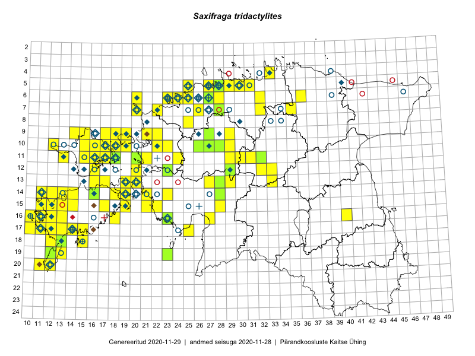

Saxifraga tridactylites
Uuendatud: 2016-12-08
Kaardile koondatud taksonid: Saxifraga tridactylites L.

Kaart põhineb 235 kirjel, neist vaatlusi 230 ja eksemplare 5. Taksonit on leitud 90 ruudust.
| Ruut | Vaatleja(d) | Vaatlusaeg | Kirje tüüp | Viide andmebaasikirjele |
|---|---|---|---|---|
| 06-27 | Toomas Kukk | 2015-06-19 | punkt | vaata PlutoFis |
| 12-29 | Peedu Saar, Timo Luhamäe | 2015-05-09 | ruut/ala | vaata PlutoFis |
| 12-32 | Peedu Saar, Timo Luhamäe | 2015-05-10 | ruut/ala | vaata PlutoFis |
| 12-32 | Peedu Saar, Timo Luhamäe | 2015-05-10 | punkt | vaata PlutoFis |
| 07-35 | Peedu Saar, Timo Luhamäe | 2015-05-12 | ruut/ala | vaata PlutoFis |
| 16-23 | Peedu Saar, Liina Oja | 2015-05-15 | ruut/ala | vaata PlutoFis |
| 16-23 | Peedu Saar, Liina Oja | 2015-05-21 | punkt | vaata PlutoFis |
| 11-17 | Peedu Saar, Toomas Kukk | 2015-05-28 | ruut/ala | vaata PlutoFis |
| 11-17 | Peedu Saar, Toomas Kukk | 2015-05-28 | punkt | vaata PlutoFis |
| 10-15 | Peedu Saar, Toomas Kukk | 2015-05-28 | ruut/ala | vaata PlutoFis |
| 10-15 | Peedu Saar, Toomas Kukk | 2015-05-28 | punkt | vaata PlutoFis |
| 09-14 | Peedu Saar, Toomas Kukk | 2015-05-27 | ruut/ala | vaata PlutoFis |
| 09-17 | Toomas Kukk, Eerik Leibak | 2015-08-12 | ruut/ala | vaata PlutoFis |
| 09-17 | Toomas Kukk, Eerik Leibak | 2015-08-12 | punkt | vaata PlutoFis |
| 09-14 | Toomas Kukk, Eerik Leibak | 2015-08-10 | ruut/ala | vaata PlutoFis |
| 09-14 | Toomas Kukk, Eerik Leibak | 2015-08-10 | punkt | vaata PlutoFis |
| 14-28 | Toomas Kukk, Indrek Tammekänd | 2015-05-09 | ruut/ala | vaata PlutoFis |
| 10-16 | Peedu Saar, Toomas Kukk | 2015-05-26 | ruut/ala | vaata PlutoFis |
| 10-17 | Peedu Saar, Toomas Kukk | 2015-05-26 | ruut/ala | vaata PlutoFis |
| 12-29 | Tiit Hallikma, Indrek Tammekänd, Toomas Kukk | 2015-06-09 | ruut/ala | vaata PlutoFis |
| 05-31 | Rein Kalamees | 2015-08-09 | ruut/ala | vaata PlutoFis |
| 12-33 | Toomas Kukk, Indrek Tammekänd | 2015-05-10 | ruut/ala | vaata PlutoFis |
| 13-33 | Toomas Kukk, Indrek Tammekänd | 2015-05-10 | ruut/ala | vaata PlutoFis |
| 12-33 | Toomas Kukk, Indrek Tammekänd | 2015-05-10 | punkt | vaata PlutoFis |
| 13-33 | Toomas Kukk, Indrek Tammekänd | 2015-05-10 | punkt | vaata PlutoFis |
| 10-28 | Ott Luuk, Toomas Kukk, Thea Kull, Peedu Saar, Timo Luhamäe | 2015-06-25 | ruut/ala | vaata PlutoFis |
| 11-29 | Toomas Kukk, Tiit Hallikma | 2015-06-11 | ruut/ala | vaata PlutoFis |
| 10-17 | Toomas Kukk, Peedu Saar | 2015-05-26 | punkt | vaata PlutoFis |
| 10-16 | Toomas Kukk, Peedu Saar | 2015-05-26 | punkt | vaata PlutoFis |
| 10-16 | Toomas Kukk, Peedu Saar | 2015-05-26 | punkt | vaata PlutoFis |
| 05-30 | Rein Kalamees, Kersti Püssa | 2015-05-27 | ruut/ala | vaata PlutoFis |
| 09-14 | Toomas Kukk, Peedu Saar | 2015-05-27 | punkt | vaata PlutoFis |
| 09-14 | Toomas Kukk, Peedu Saar | 2015-05-27 | punkt | vaata PlutoFis |
| 06-27 | Toomas Kukk | 2015-06-19 | ruut/ala | vaata PlutoFis |
| 06-27 | Toomas Kukk | 2015-06-19 | punkt | vaata PlutoFis |
| 16-10 | Toomas Kukk | 2014-06-21 | ruut/ala | vaata PlutoFis |
| 17-12 | Toomas Kukk, Mari Reitalu | 2014-06-20 | ruut/ala | vaata PlutoFis |
| 17-12 | Toomas Kukk, Mari Reitalu | 2014-06-20 | punkt | vaata PlutoFis |
| 10-29 | Tiit Hallikma, Toomas Kukk | 2015-06-11 | ruut/ala | vaata PlutoFis |
| 11-29 | Tiit Hallikma, Toomas Kukk | 2015-06-11 | punkt | vaata PlutoFis |
| 17-11 | Toomas Kukk | 2014-06-28 | punkt | vaata PlutoFis |
| 10-28 | Ott Luuk | 2015-06-25 | punkt | vaata PlutoFis |
| 16-23 | Toomas Kukk, Thea Kull, Peedu Saar, Timo Luhamäe | 2014-05-14 | punkt | vaata PlutoFis |
| 14-16 | Toomas Kukk, Thea Kull, Peedu Saar, Ott Luuk | 2014-05-23 | punkt | vaata PlutoFis |
| 14-28 | Ott Luuk, Hannes Pehlak | 2015-06-10 | ruut/ala | vaata PlutoFis |
| 19-23 | Ott Luuk | 2015-05-30 | ruut/ala | vaata PlutoFis |
| 19-23 | Ott Luuk | 2015-05-30 | punkt | vaata PlutoFis |
| 11-32 | Ott Luuk, Toivo Sepp | 2015-05-18 | ruut/ala | vaata PlutoFis |
| 11-31 | Ott Luuk, Toivo Sepp | 2015-05-18 | ruut/ala | vaata PlutoFis |
| 11-30 | Ott Luuk, Toivo Sepp | 2015-05-18 | ruut/ala | vaata PlutoFis |
| 11-32 | Ott Luuk, Toivo Sepp | 2015-05-18 | punkt | vaata PlutoFis |
| 11-31 | Ott Luuk, Toivo Sepp | 2015-05-18 | punkt | vaata PlutoFis |
| 11-30 | Ott Luuk, Toivo Sepp | 2015-05-18 | punkt | vaata PlutoFis |
| 11-29 | Ott Luuk, Toivo Sepp | 2015-05-18 | punkt | vaata PlutoFis |
| 17-25 | Ott Luuk, Eerik Leibak | 2015-05-21 | ruut/ala | vaata PlutoFis |
| 15-22 | Vilma Kuusk, Indrek Tammekänd | 2015-06-30 | punkt | vaata PlutoFis |
| 13-19 | Meeli Mesipuu | 2015-05-09 | ruut/ala | vaata PlutoFis |
| 13-19 | Meeli Mesipuu | 2015-05-09 | punkt | vaata PlutoFis |
| 17-25 | Ott Luuk, Eerik Leibak | 2015-05-21 | punkt | vaata PlutoFis |
| 17-13 | Triin Reitalu, Mari Reitalu | 2015-05-18 | punkt | vaata PlutoFis |
| 06-24 | Erkki Otsman, Sergei Smirnov | 2015-05-29 | ruut/ala | vaata PlutoFis |
| 16-11 | Mari Reitalu | 2015-05-22 | ruut/ala | vaata PlutoFis |
| 16-11 | Mari Reitalu | 2015-06-22 | punkt | vaata PlutoFis |
| 15-11 | Mari Reitalu | 2014-05-18 | ruut/ala | vaata PlutoFis |
| 17-10 | Mari Reitalu, Triin Reitalu | 2015-05-10 | ruut/ala | vaata PlutoFis |
| 17-10 | Mari Reitalu, Triin Reitalu | 2015-05-10 | punkt | vaata PlutoFis |
| 15-12 | Triin Reitalu | 2015-05-12 | ruut/ala | vaata PlutoFis |
| 15-11 | Mari Reitalu, Triin Reitalu | 2015-04-25 | ruut/ala | vaata PlutoFis |
| 14-12 | Mari Reitalu, Triin Reitalu | 2015-05-24 | ruut/ala | vaata PlutoFis |
| 14-12 | Mari Reitalu, Triin Reitalu | 2015-05-24 | punkt | vaata PlutoFis |
| 15-12 | Mari Reitalu, Triin Reitalu | 2015-05-24 | ruut/ala | vaata PlutoFis |
| 15-12 | Mari Reitalu, Triin Reitalu | 2015-05-24 | punkt | vaata PlutoFis |
| 19-13 | Oliver Parrest | 2015-05-20 | ruut/ala | vaata PlutoFis |
| 17-14 | Mari Reitalu, Sirje Azarov | 2015-05-09 | ruut/ala | vaata PlutoFis |
| 14-13 | Mari Reitalu, Oliver Parrest | 2015-05-14 | ruut/ala | vaata PlutoFis |
| 16-13 | Mari Reitalu, Oliver Parrest | 2015-05-22 | ruut/ala | vaata PlutoFis |
| 18-12 | Mari Reitalu, Oliver Parrest | 2015-05-22 | ruut/ala | vaata PlutoFis |
| 15-13 | Mari Reitalu, Oliver Parrest | 2015-05-14 | ruut/ala | vaata PlutoFis |
| 20-11 | Mari Reitalu, Oliver Parrest | 2015-05-26 | ruut/ala | vaata PlutoFis |
| 17-12 | Mari Reitalu, Triin Reitalu | 2015-05-05 | ruut/ala | vaata PlutoFis |
| 17-12 | Mari Reitalu, Triin Reitalu | 2015-05-05 | punkt | vaata PlutoFis |
| 19-12 | Oliver Parrest | 2015-05-16 | ruut/ala | vaata PlutoFis |
| 14-11 | Mari Reitalu, Triin Reitalu | 2015-05-24 | ruut/ala | vaata PlutoFis |
| 14-11 | Mari Reitalu, Triin Reitalu | 2015-05-25 | punkt | vaata PlutoFis |
| 14-16 | Mari Reitalu, Sirje Azarov | 2015-05-09 | ruut/ala | vaata PlutoFis |
| 18-15 | Oliver Parrest | 2015-05-23 | ruut/ala | vaata PlutoFis |
| 14-16 | Mari Reitalu, Sirje Azarov | 2015-05-09 | punkt | vaata PlutoFis |
| 20-12 | Mari Reitalu, Oliver Parrest | 2015-05-26 | ruut/ala | vaata PlutoFis |
| 16-18 | Mari Reitalu, Sirje Azarov | 2015-05-16 | ruut/ala | vaata PlutoFis |
| 16-18 | Mari Reitalu, Sirje Azarov | 2015-05-16 | punkt | vaata PlutoFis |
| 20-12 | Triin Reitalu, Sirje Azarov | 2015-05-30 | ruut/ala | vaata PlutoFis |
| 15-19 | Mari Reitalu, Sirje Azarov | 2015-05-16 | ruut/ala | vaata PlutoFis |
| 20-12 | Triin Reitalu | 2015-05-30 | punkt | vaata PlutoFis |
| 15-19 | Mari Reitalu, Sirje Azarov | 2015-05-16 | punkt | vaata PlutoFis |
| 13-28 | Liina Oja, Ott Luuk | 2015-05-09 | punkt | vaata PlutoFis |
| 17-14 | Mari Reitalu, Sirje Azarov | 2015-05-09 | punkt | vaata PlutoFis |
| 13-28 | Liina Oja, Ott Luuk | 2015-05-09 | ruut/ala | vaata PlutoFis |
| 18-13 | Mari Reitalu, Oliver Parrest | 2015-05-27 | ruut/ala | vaata PlutoFis |
| 16-11 | Mari Reitalu, Triin Reitalu | 2015-05-28 | ruut/ala | vaata PlutoFis |
| 15-12 | Mari Reitalu, Triin Reitalu | 2015-04-25 | ruut/ala | vaata PlutoFis |
| 15-12 | Mari Reitalu, Triin Reitalu | 2015-04-25 | punkt | vaata PlutoFis |
| 17-11 | Mari Reitalu, Triin Reitalu | 2015-05-08 | ruut/ala | vaata PlutoFis |
| 17-11 | Mari Reitalu, Triin Reitalu | 2015-05-08 | punkt | vaata PlutoFis |
| 16-10 | Sirje Azarov, Mari Reitalu | 2015-05-22 | ruut/ala | vaata PlutoFis |
| 16-10 | Sirje Azarov, Mari Reitalu | 2015-05-22 | punkt | vaata PlutoFis |
| 17-11 | Mari Reitalu, Triin Reitalu | 2015-05-19 | ruut/ala | vaata PlutoFis |
| 16-10 | Sirje Azarov, Mari Reitalu | 2015-05-22 | punkt | vaata PlutoFis |
| 16-10 | Sirje Azarov, Mari Reitalu | 2015-05-23 | punkt | vaata PlutoFis |
| 16-11 | Sirje Azarov, Mari Reitalu | 2015-05-23 | ruut/ala | vaata PlutoFis |
| 16-11 | Sirje Azarov, Mari Reitalu | 2015-05-23 | punkt | vaata PlutoFis |
| 16-11 | Sirje Azarov, Mari Reitalu | 2015-05-23 | punkt | vaata PlutoFis |
| 17-11 | Mari Reitalu, Triin Reitalu | 2015-05-10 | ruut/ala | vaata PlutoFis |
| 06-36 | Ott Luuk, Liina Oja | 2015-05-13 | ruut/ala | vaata PlutoFis |
| 16-12 | Mari Reitalu, Triin Reitalu | 2015-04-30 | ruut/ala | vaata PlutoFis |
| 13-29 | Meeli Mesipuu, Timo Luhamäe | 2015-06-10 | ruut/ala | vaata PlutoFis |
| 13-29 | Meeli Mesipuu, Timo Luhamäe | 2015-06-10 | punkt | vaata PlutoFis |
| 15-28 | Mari Metsoja, Jaak-Albert Metsoja | 2015-06-12 | ruut/ala | vaata PlutoFis |
| 09-29 | Toivo Sepp, Aat Sarv | 2015-05-06 | punkt | vaata PlutoFis |
| 12-32 | Meeli Mesipuu, Timo Luhamäe | 2015-06-11 | ruut/ala | vaata PlutoFis |
| 13-29 | Timo Luhamäe, Meeli Mesipuu | 2015-06-10 | punkt | vaata PlutoFis |
| 12-32 | Timo Luhamäe, Meeli Mesipuu | 2015-06-11 | punkt | vaata PlutoFis |
| 12-33 | Timo Luhamäe, Meeli Mesipuu | 2015-06-11 | punkt | vaata PlutoFis |
| 10-29 | Toivo Sepp, Aat Sarv | 2015-05-06 | ruut/ala | vaata PlutoFis |
| 12-33 | Meeli Mesipuu, Timo Luhamäe | 2015-06-11 | ruut/ala | vaata PlutoFis |
| 11-18 | Meeli Mesipuu | 2015-05-15 | ruut/ala | vaata PlutoFis |
| 11-18 | Meeli Mesipuu | 2015-05-15 | punkt | vaata PlutoFis |
| 11-18 | Meeli Mesipuu | 2015-05-15 | punkt | vaata PlutoFis |
| 10-12 | Meeli Mesipuu | 2015-05-27 | ruut/ala | vaata PlutoFis |
| 15-14 | Karin Kikas, Elle Rajandu | 2015-07-23 | ruut/ala | vaata PlutoFis |
| 11-16 | Meeli Mesipuu, Timo Luhamäe | 2015-05-28 | ruut/ala | vaata PlutoFis |
| 06-25 | Mari Metsoja, Jaak-Albert Metsoja | 2015-05-16 | ruut/ala | vaata PlutoFis |
| 14-13 | Mari Reitalu, Oliver Parrest | 2015-05-14 | punkt | vaata PlutoFis |
| 15-13 | Mari Reitalu, Oliver Parrest | 2015-05-14 | punkt | vaata PlutoFis |
| 14-13 | Mari Reitalu, Oliver Parrest | 2015-05-14 | punkt | vaata PlutoFis |
| 16-13 | Mari Reitalu, Oliver Parrest | 2015-05-22 | punkt | vaata PlutoFis |
| 05-25 | Mari Metsoja, Jaak-Albert Metsoja | 2015-05-30 | ruut/ala | vaata PlutoFis |
| 07-26 | Mari Metsoja, Jaak-Albert Metsoja | 2015-05-30 | ruut/ala | vaata PlutoFis |
| 08-25 | Mari Metsoja, Jaak-Albert Metsoja | 2015-05-31 | ruut/ala | vaata PlutoFis |
| 06-24 | Jaak-Albert Metsoja, Mari Metsoja, Ott Luuk | 2015-06-05 | ruut/ala | vaata PlutoFis |
| 06-23 | Mari Metsoja, Jaak-Albert Metsoja, Ott Luuk | 2015-06-04 | ruut/ala | vaata PlutoFis |
| 06-23 | Jaak-Albert Metsoja, Mari Metsoja, Ott Luuk | 2015-06-05 | ruut/ala | vaata PlutoFis |
| 15-14 | Karin Kikas, Elle Rajandu | 2015-07-23 | punkt | vaata PlutoFis |
| 11-16 | Meeli Mesipuu, Timo Luhamäe | 2015-05-28 | punkt | vaata PlutoFis |
| 13-19 | Kadri Tali | 2015-10-05 | ruut/ala | vaata PlutoFis |
| 11-18 | Meeli Mesipuu, Timo Luhamäe | 2016-05-28 | punkt | vaata PlutoFis |
| 11-18 | Meeli Mesipuu, Timo Luhamäe | 2016-05-28 | punkt | vaata PlutoFis |
| 13-20 | Kadri Tali | 2015-06-05 | ruut/ala | vaata PlutoFis |
| 13-19 | Kadri Tali | 2015-06-03 | ruut/ala | vaata PlutoFis |
| 16-11 | Triin Reitalu, Mari Reitalu | 2015-04-30 | punkt | vaata PlutoFis |
| 17-11 | Triin Reitalu, Mari Reitalu | 2015-05-10 | punkt | vaata PlutoFis |
| 17-11 | Triin Reitalu, Mari Reitalu | 2015-05-19 | punkt | vaata PlutoFis |
| 16-11 | Triin Reitalu, Mari Reitalu | 2015-05-28 | punkt | vaata PlutoFis |
| 17-11 | Peedu Saar, Toomas Kukk, Ott Luuk, Thea Kull, Mari Reitalu | 2014-06-28 | ruut/ala | vaata PlutoFis |
| 10-27 | Peedu Saar, Ott Luuk, Meeli Mesipuu, Thea Kull, Kersti Püssa, Rein Kalamees, Toomas Kukk | 2014-06-10 | ruut/ala | vaata PlutoFis |
| 10-26 | Maret Gerz, Jaak-Albert Metsoja, Ott Luuk, Toomas Kukk, Meeli Mesipuu, Thea Kull | 2014-06-11 | ruut/ala | vaata PlutoFis |
| 09-27 | Ott Luuk, Jaak-Albert Metsoja, Maret Gerz | 2014-06-10 | ruut/ala | vaata PlutoFis |
| 20-11 | Mari Reitalu, Triin Reitalu | 2015-07-19 | ruut/ala | vaata PlutoFis |
| 20-11 | Mari Reitalu, Triin Reitalu | 2015-07-19 | punkt | vaata PlutoFis |
| 19-12 | Ott Luuk, Mari Reitalu, Thea Kull | 2014-05-23 | ruut/ala | vaata PlutoFis |
| 11-21 | Hanna-Eliisa Luts, Tõnu Ploompuu | 2015-08-13 | ruut/ala | vaata PlutoFis |
| 20-11 | Oliver Parrest, Mari Reitalu | 2015-05-26 | punkt | vaata PlutoFis |
| 20-12 | Oliver Parrest, Mari Reitalu | 2015-05-26 | punkt | vaata PlutoFis |
| 20-12 | Oliver Parrest, Mari Reitalu | 2015-05-26 | punkt | vaata PlutoFis |
| 20-12 | Oliver Parrest, Mari Reitalu | 2015-05-26 | punkt | vaata PlutoFis |
| 18-13 | Oliver Parrest, Mari Reitalu | 2015-05-27 | punkt | vaata PlutoFis |
| 18-12 | Oliver Parrest, Mari Reitalu | 2015-05-22 | punkt | vaata PlutoFis |
| 09-27 | Aat Sarv | 2015-05-15 | ruut/ala | vaata PlutoFis |
| 14-23 | Toomas Kukk, Indrek Tammekänd | 2016-04-29 | ruut/ala | vaata PlutoFis |
| 10-27 | Aat Sarv | 2015-05-15 | ruut/ala | vaata PlutoFis |
| 15-28 | Ott Luuk, Tiit Hallikma | 2016-04-28 | ruut/ala | vaata PlutoFis |
| 10-16 | Toomas Kukk, Peedu Saar | 2016-05-08 | punkt | vaata PlutoFis |
| 10-17 | Toomas Kukk, Peedu Saar | 2016-05-08 | punkt | vaata PlutoFis |
| 10-17 | Toomas Kukk, Peedu Saar | 2016-05-08 | punkt | vaata PlutoFis |
| 06-27 | Tõnu Ploompuu | 2015-08-11 | ruut/ala | vaata PlutoFis |
| 10-16 | Toomas Kukk, Peedu Saar | 2016-05-07 | ruut/ala | vaata PlutoFis |
| 14-23 | Toomas Kukk, Indrek Tammekänd | 2016-04-29 | punkt | vaata PlutoFis |
| 11-15 | Toomas Kukk, Peedu Saar | 2016-05-06 | ruut/ala | vaata PlutoFis |
| 11-16 | Toomas Kukk, Peedu Saar | 2016-05-06 | ruut/ala | vaata PlutoFis |
| 11-16 | Toomas Kukk, Peedu Saar | 2016-05-06 | punkt | vaata PlutoFis |
| 11-15 | Toomas Kukk, Peedu Saar | 2016-05-06 | punkt | vaata PlutoFis |
| 11-13 | Toomas Kukk, Peedu Saar | 2016-05-07 | ruut/ala | vaata PlutoFis |
| 10-17 | Toomas Kukk, Peedu Saar | 2016-05-08 | ruut/ala | vaata PlutoFis |
| 11-13 | Peedu Saar, Toomas Kukk | 2016-05-07 | punkt | vaata PlutoFis |
| 10-19 | Peedu Saar, Toomas Kukk | 2016-05-12 | punkt | vaata PlutoFis |
| 07-28 | Thea Kull, Meeli Mesipuu | 2016-05-13 | ruut/ala | vaata PlutoFis |
| 09-19 | Peedu Saar, Toomas Kukk | 2016-05-13 | punkt | vaata PlutoFis |
| 10-19 | Toomas Kukk, Peedu Saar | 2016-05-12 | ruut/ala | vaata PlutoFis |
| 10-18 | Toomas Kukk, Peedu Saar | 2016-05-13 | ruut/ala | vaata PlutoFis |
| 09-18 | Toomas Kukk, Peedu Saar | 2016-05-13 | punkt | vaata PlutoFis |
| 09-19 | Toomas Kukk, Peedu Saar | 2016-05-13 | punkt | vaata PlutoFis |
| 10-18 | Toomas Kukk, Peedu Saar | 2016-05-13 | punkt | vaata PlutoFis |
| 09-18 | Toomas Kukk, Peedu Saar | 2016-05-13 | punkt | vaata PlutoFis |
| 09-19 | Toomas Kukk, Peedu Saar | 2016-05-13 | punkt | vaata PlutoFis |
| 14-21 | Toomas Kukk, Peedu Saar | 2016-05-14 | ruut/ala | vaata PlutoFis |
| 11-24 | Ott Luuk, Tiit Hallikma | 2016-05-12 | ruut/ala | vaata PlutoFis |
| 12-20 | Ott Luuk, Tiit Hallikma | 2016-05-13 | ruut/ala | vaata PlutoFis |
| ? | Sirje Azarov | 2016-05-21 | punkt | vaata PlutoFis |
| 05-28 | Peedu Saar | 2016-05-24 | ruut/ala | vaata PlutoFis |
| 05-28 | Peedu Saar | 2016-05-24 | punkt | vaata PlutoFis |
| 12-23 | Ott Luuk, Tiit Hallikma | 2016-05-14 | ruut/ala | vaata PlutoFis |
| 06-28 | Tõnu Ploompuu | 2015-06-06 | ruut/ala | vaata PlutoFis |
| 09-21 | Sirje Lagle, Tõnu Ploompuu | 2015-05-16 | ruut/ala | vaata PlutoFis |
| 09-22 | Sirje Lagle, Tõnu Ploompuu | 2015-05-15 | ruut/ala | vaata PlutoFis |
| 15-28 | Tiit Hallikma, Ott Luuk | 2016-04-28 | punkt | vaata PlutoFis |
| 11-24 | Tiit Hallikma, Ott Luuk | 2016-05-12 | punkt | vaata PlutoFis |
| 05-28 | Peedu Saar | 2016-06-01 | ruut/ala | vaata PlutoFis |
| 05-28 | Toomas Kukk, Peedu Saar | 2016-06-01 | punkt | vaata PlutoFis |
| 10-23 | Sirje Lagle, Tõnu Ploompuu | 2015-05-15 | ruut/ala | vaata PlutoFis |
| 06-28 | Toomas Kukk | 2016-07-04 | ruut/ala | vaata PlutoFis |
| 06-28 | Toomas Kukk | 2016-07-04 | punkt | vaata PlutoFis |
| 06-25 | Toomas Kukk, Sander Laherand | 2016-07-05 | ruut/ala | vaata PlutoFis |
| 12-29 | Mari Reitalu, Eerik Leibak | 2016-07-06 | ruut/ala | vaata PlutoFis |
| 12-29 | Mari Reitalu, Eerik Leibak | 2016-07-06 | punkt | vaata PlutoFis |
| 07-32 | Rein Kalamees, Kersti Püssa | 2016-06-23 | ruut/ala | vaata PlutoFis |
| 05-28 | Kadi-Liis Kesler, Tiina Elvisto | 2015-05-12 | ruut/ala | vaata PlutoFis |
| 20-11 | Toomas Kukk, Ott Luuk | 2012-09-07 | punkt | vaata PlutoFis |
| 13-33 | Ott Luuk, Indrek Tammekänd | 2016-07-21 | ruut/ala | vaata PlutoFis |
| 11-18 | Timo Luhamäe, Meeli Mesipuu | 2015-05-26 | punkt | vaata PlutoFis |
| 11-18 | Timo Luhamäe, Meeli Mesipuu | 2015-05-26 | punkt | vaata PlutoFis |
| 10-12 | Timo Luhamäe, Meeli Mesipuu | 2015-05-27 | punkt | vaata PlutoFis |
| 10-12 | Timo Luhamäe, Meeli Mesipuu | 2015-05-27 | punkt | vaata PlutoFis |
| 11-16 | Timo Luhamäe, Meeli Mesipuu | 2015-05-28 | punkt | vaata PlutoFis |
| 11-16 | Timo Luhamäe, Meeli Mesipuu | 2015-05-28 | punkt | vaata PlutoFis |
| 07-28 | Meeli Mesipuu, Thea Kull | 2016-05-12 | punkt | vaata PlutoFis |
| 07-22 | Marju Erit | 2015-05-01 | ruut/ala | vaata PlutoFis |
| 05-25 | Jaak-Albert Metsoja, Mari Metsoja | 2015-05-30 | punkt | vaata PlutoFis |
| 08-25 | Jaak-Albert Metsoja, Mari Metsoja | 2015-05-31 | punkt | vaata PlutoFis |
| 06-24 | Jaak-Albert Metsoja, Mari Metsoja, Ott Luuk | 2015-06-05 | punkt | vaata PlutoFis |
| 06-23 | Jaak-Albert Metsoja, Mari Metsoja, Ott Luuk | 2015-06-04 | punkt | vaata PlutoFis |
| 06-23 | Jaak-Albert Metsoja, Mari Metsoja, Ott Luuk | 2015-06-04 | punkt | vaata PlutoFis |
| 12-29 | Peedu Saar, Timo Luhamäe | 2015-05-09 | eksemplar | vaata PlutoFis |
| 16-23 | Peedu Saar, Liina Oja | 2015-05-21 | eksemplar | vaata PlutoFis |
| 19-12 | Ott Luuk | 2014-05-23 | eksemplar | vaata PlutoFis |
| 09-27 | Ott Luuk | 2014-06-10 | eksemplar | vaata PlutoFis |
| 10-27 | Ott Luuk | 2014-06-10 | eksemplar | vaata PlutoFis |